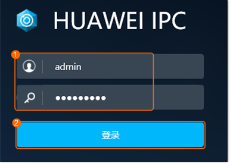

登录摄像机Web页面
前提条件
摄像机已上电并接入网络，如何操作，请参考对应摄像机的相关文档。
操作步骤
在Internet Explorer浏览器地址栏中输入
“https://摄像机IP”
，按“Enter”键。
首次登录，请根据提示设置密码。非首次登录，请直接执行
3
。
使用设置的账号和密码登录摄像机Web页面，如
图1
所示。
图1
Web登录界面

不同型号摄像机登录界面可能不一致，请以实际情况为准。